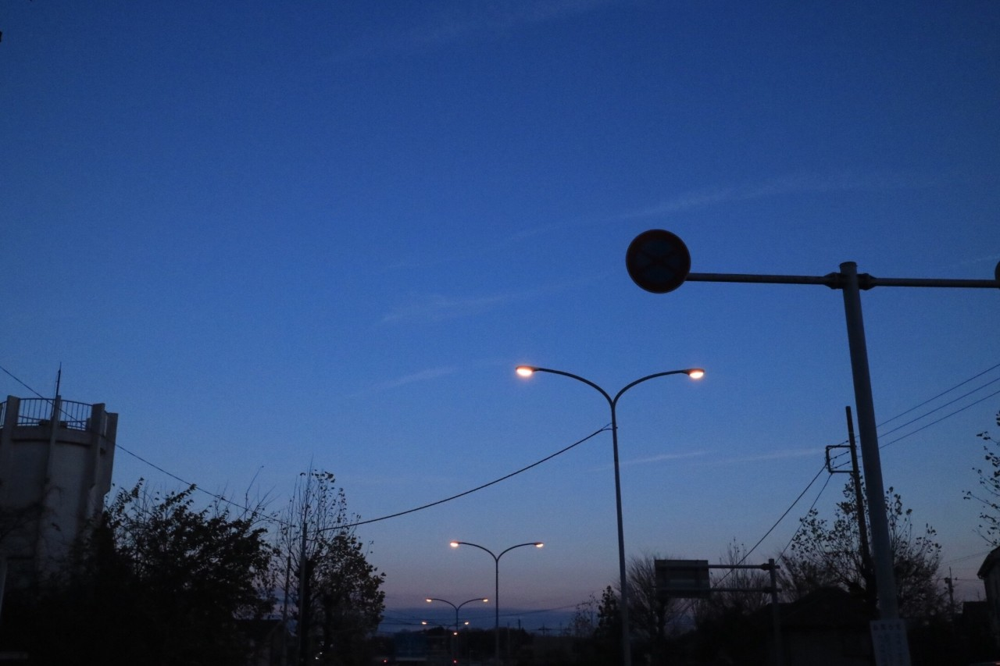
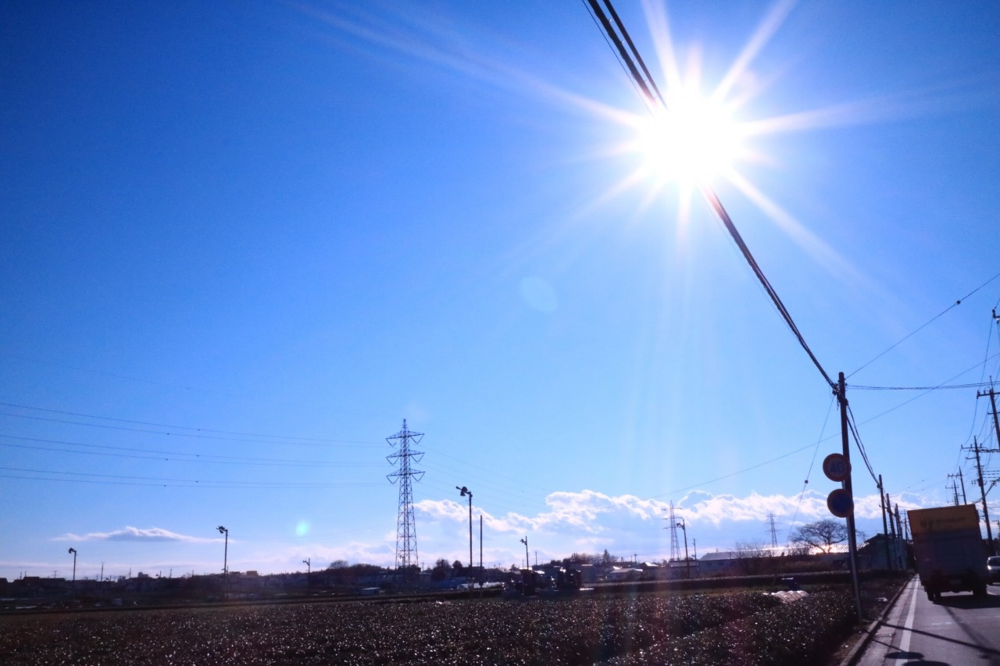
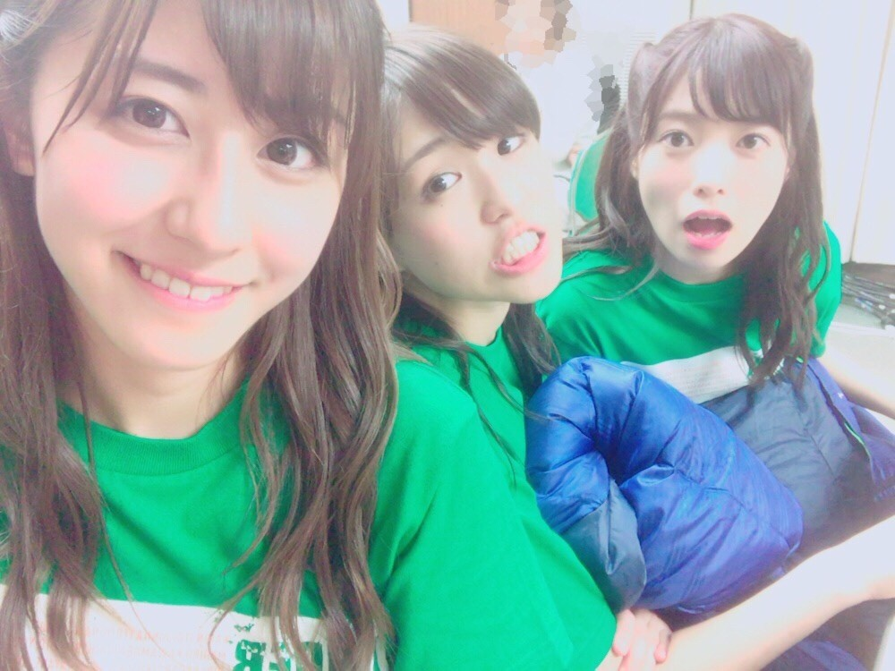

| 2016/12 12 Mon | 斎藤ちはる 子供の頃から。 |
ちはるーむへようこそ！
家族で車に乗るとき
助手席の後ろの席に座るのが
子供の頃からの決まりだったので、
シートベルトを右肩からかける
運転席の後ろの席には
未だに違和感を感じます。
子供の頃からの慣れって怖い！
右肩からのシートベルトが慣れない！
・子供の頃から車には
沢山乗せて貰っていたので
そのおかげで車酔いはほとんどした事がない！
・車に乗ったら寝る！という習慣が
子供の頃からあったので
今でも車に乗ると必ず眠くなる！
これも慣れですね\( ˆ ˆ )/笑
妹と私は後ろの席というのが
暗黙の了解だってので
たまにお母さんやお父さんが
助手席を譲ってくれると
今でも嬉しくなります。
後ろにお母さん...(｡･o･｡)ﾉ
そして私は車の車窓から撮る
風景が大好きです！
車で走っていると中々肉眼では
見る事が出来ないけど
カメラでその瞬間を撮ると
肉眼で見られなかった風景を見る事ができるから。
写真を撮るためだけに
世界中を旅して回りたい！！
#chihashot

遠くの空から陽が落ち始めている。
でもまだ青い空も広がっている。
昼と夜の境目ってなんて素敵なんだろう！
#chihashot

絵に書いたかのように綺麗な
太陽と空と雲。
太陽のこの光が大好きなんです。
だからこんな風な写真を沢山撮ってしまった！
---------------------------------♡
♬ ChihaMusic
「LIFE」ナオト・インティライミさん
映画なのかドラマなのか演劇なのか...
その中に迷い込んだ自分の
悩みや迷いと葛藤する姿に
自分を重ねてしまう。
前向きな歌詞に勇気をもらえる。
"何度でも僕ら生まれ変われるのさ
幾千通りのぼくらのLIFE"
嫌な事があっても、
挫けそうになることがあっても、
生まれ変われるんだ。
人は変わろうと思えば変われるんだ。
と改めて考えることが出来ました。
今日は先週お休みした、
ChihAnswerを募集します！
質問、沢山考えてくれましたか？
待ってます( ◦˙ ˙◦ )

にやり。
JAPAN X BOWLの決勝戦、
オービックシーガルズ 対 富士通フロンティアーズ戦は
富士通フロンティアーズの勝利！
2年ぶり2度目の優勝おめでとうございます！！
お仕事で見に行けなかったのですが...
オービックのランを出せないくらい
富士通のディフェンスが止めた！という
噂を聞きました◎
見に行きたかった( ;o; )
全然アメフトの試合を観に行けてないので
行きたいな〜と思ってるばかりの日々...
NFLも見に行ってみたいし
行きたいところばかりです...！！
おやすみ〜
斎藤ちはる